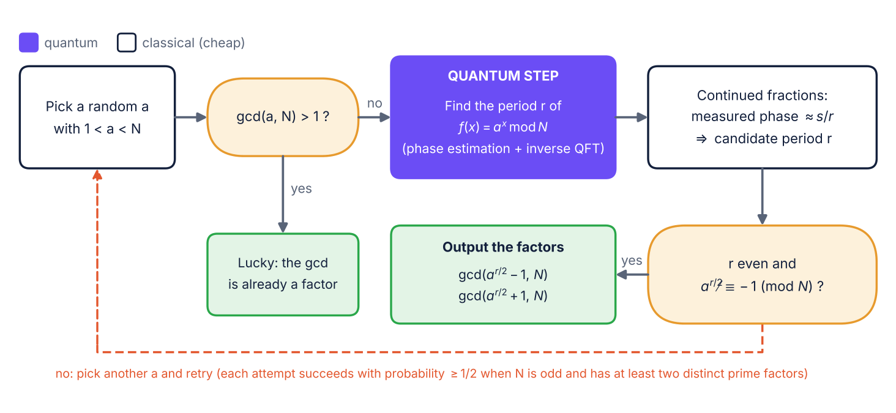
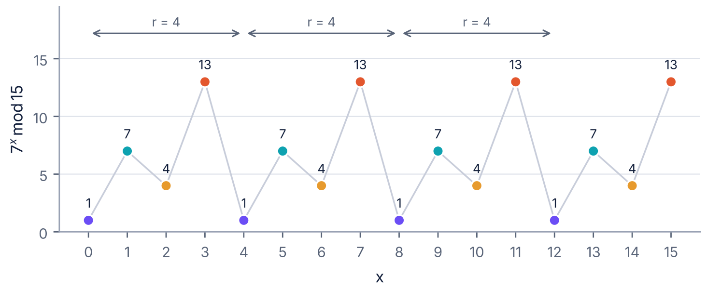
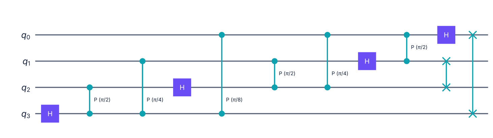
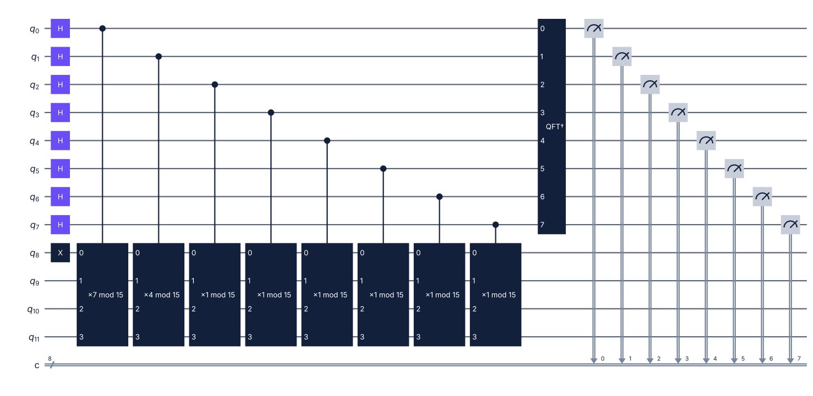
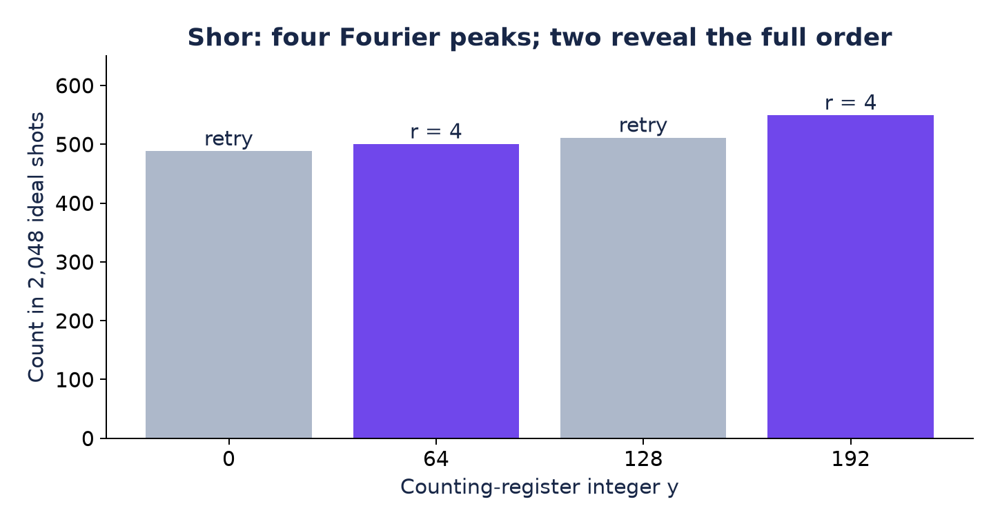

ในบทความนี้
In this post
The reduction — factoring ไม่ได้กลายเป็น search
บทที่ 3/7 · ดัดแปลงจากเอกสาร Quantum Algorithms for Programmers, Edition 1.0 หน้า 16–23 พร้อมโค้ดและคำอธิบายที่ตรวจซ้ำสำหรับเว็บ
Shor’s algorithm factor integer N ด้วยจำนวน operation ที่เป็น polynomial ในจำนวน bits n = ⌈log₂N⌉ ขณะที่ general number field sieve ซึ่งเป็น classical baseline สำคัญมี asymptotic cost แบบ sub-exponential นี่จึงเป็น superpolynomial improvement เทียบกับวิธีที่รู้จัก ไม่ใช่ Grover ที่เอา square root มาครอบ brute force
เลือก base a ที่ 1 < a < N ก่อน ถ้า gcd(a,N) > 1 ก็พบตัวประกอบโดยไม่ต้องใช้ quantum step ถ้า gcd=1 ให้หา order r ซึ่งเป็นจำนวนบวกน้อยที่สุดที่ ar mod N = 1 หาก r เป็นเลขคู่และ ar/2 mod N ไม่เท่ากับ −1 จะใช้ gcd(ar/2 ± 1,N) เพื่อหา nontrivial factors แล้วตรวจผล


classical code ทำทั้งการเลือก base, modular arithmetic, continued fractions และการตรวจตัวประกอบ quantum subroutine รับผิดชอบการหา order เส้นแบ่งนี้ช่วยให้เราเขียน test แยก classical recovery จาก quantum distribution ได้
อ้างอิง: [1]
Worked example — 7ˣ mod 15


สำหรับ N=15 และ a=7 ลำดับเป็น 1, 7, 4, 13, 1, 7, 4, 13, … จึงมี r=4 แล้ว 7² mod 15 = 4 ทำให้ gcd(4−1,15)=3 และ gcd(4+1,15)=5 เราเห็น period ได้ด้วยตาเพราะโจทย์เล็ก แต่สำหรับ N ที่มีหลายพัน bits การประเมินทุกตำแหน่งไม่ใช่วิธีที่มีประสิทธิภาพ
counting register t qubits เริ่มด้วย equal superposition ของ x=0…2t−1 ส่วน work register เริ่มที่ |1⟩ controlled modular multiplication แต่ละตัวคำนวณ a2ʲ mod N เข้ากับ work register จึงได้ joint state ที่ผูก x กับ ax mod N โดยไม่ต้องอ่านค่าทุก x
ไม่จำเป็นต้องวัด work register ก่อน ข้อมูล period อยู่ใน correlation ระหว่างสอง registers การนำ inverse QFT ไปใช้กับ counting register แล้ววัดจะสร้าง distribution ที่มี peak ใกล้ y/2t ≈ s/r
QFT — เปลี่ยน period เป็น peak


Quantum Fourier transform เป็น DFT บน amplitudes ของ register วงจร textbook บน t qubits ใช้ gate ระดับ O(t²) และ final swaps จัด bit order การเปรียบเทียบกับ FFT ของ array ยาว 2t ต้องระวัง เพราะ QFT ให้ quantum state ไม่ได้ส่ง transformed array ทุกตัวออกมา
ในตัวอย่างใช้ t=8 จึงมี 256 counting values และ r=4 หาร 256 ลงตัว peak จึงอยู่ตรง 0,64,128,192 แทน phase 0,1/4,1/2,3/4 โดยไม่มี rounding error ของ phase ในกรณีทั่วไป peak ไม่จำเป็นต้องตรง bin พอดี ต้องมี precision พอและทำ classical recovery อย่างรอบคอบ
test ของ companion สร้าง matrix ของ inverse QFT สี่ qubits แล้วเทียบกับ inverse DFT 16×16 โดยตรง เพื่อจับลำดับ gate, เครื่องหมาย phase และ swap ที่กลับผิด ก่อนใช้มันใน Shor หรือ HHL
อ้างอิง: [2]
Implementation — recovery ต้องยอมรับ retry


ส่วนโค้ดสำหรับอ่านแนวคิด ใช้ไฟล์เต็มพร้อม imports จาก companion และคำสั่งใน Run & explore ด้านล่าง
def period_finding_circuit():
qc = QuantumCircuit(N_COUNT + N_WORK, N_COUNT)
work = list(range(N_COUNT, N_COUNT + N_WORK))
qc.h(range(N_COUNT))
qc.x(work[0])
for j in range(N_COUNT):
multiplier = pow(A, 2 ** j, N)
qc.append(modmul_gate(multiplier).control(1), [j] + work)
qc.append(inverse_qft(N_COUNT), range(N_COUNT))
qc.measure(range(N_COUNT), range(N_COUNT))
return qc
def factors_from_measurement(measured):
r = Fraction(measured, 2 ** N_COUNT).limit_denominator(N).denominator
if r % 2 or pow(A, r, N) != 1:
return r, None
half = pow(A, r // 2, N)
factors = tuple(sorted((math.gcd(half - 1, N), math.gcd(half + 1, N))))
if any(f in (1, N) for f in factors) or math.prod(factors) != N:
return r, None
return r, factorsFraction(measured, 256) เก็บสัดส่วนอย่าง exact ก่อนจำกัด denominator ถ้าวัด y=64 จะได้ 1/4 จึงเสนอ r=4 แต่ y=128 ให้ 1/2 ซึ่งมี denominator 2 แม้ true order เป็น 4 ตัวตรวจ pow(A, r, N) == 1 จึงจำเป็น ไม่ควรถือว่า denominator ทุกครั้งเป็น period
ในโปรแกรมนี้ failed sample ทำให้ retry ได้ การรวม denominator หลายครั้งด้วย LCM เป็นการพัฒนาต่อที่เป็นไปได้ หลังได้ตัวประกอบต้องตรวจว่าแต่ละตัวไม่ใช่ 1 หรือ N และคูณกันกลับเป็น N จริง
modular multiplier ใน companion เป็น dense 16×16 permutation matrix โดย map y<15 ไป a·y mod15 และปล่อย y=15 ไว้เดิม เพื่อให้ unitary ครบ register วิธีนี้ใช้ได้เพราะ a เป็น coprime กับ 15 แต่ขยาย N แล้ว matrix จะโตแบบ exponential การ factor ขนาดจริงต้องใช้ reversible arithmetic circuits
Evidence — factor 15 และความเสี่ยงด้าน cryptography
ผลรันที่บันทึก 24 November 2026
N=15; a=7; counting=8; work=4; shots=2048
y= 0; shots= 488; phase=0.00; candidate r=1; factors=None
y= 64; shots= 500; phase=0.25; candidate r=4; factors=(3, 5)
y=128; shots= 511; phase=0.50; candidate r=2; factors=None
y=192; shots= 549; phase=0.75; candidate r=4; factors=(3, 5)

ผลรัน 2,048 shots ได้ four peaks ตามทฤษฎี โดย 1,049 shots จาก phase 1/4 และ 3/4 พาไปถึง factors ทันที สัดส่วนประมาณครึ่งหนึ่งที่ต้อง retry เป็นพฤติกรรมที่คาดไว้ ไม่ใช่บั๊ก การแสดง r=4 ในโจทย์เล็กยังไม่ใช่หลักฐานว่า hardware factor RSA-2048 ได้
ผลของ Shor ยังครอบคลุม discrete logarithm จึงเกี่ยวกับ RSA และ elliptic-curve public-key systems งานประมาณ resource ของ Gidney (2025) ระบุ scenario ที่ใช้ noisy physical qubits ต่ำกว่าหนึ่งล้านและเวลาต่ำกว่าหนึ่งสัปดาห์สำหรับ RSA-2048 ภายใต้สมมติฐาน error rate, connectivity และ cycle time ที่ระบุ นี่เป็น estimate ของระบบที่ต้องสร้าง ไม่ใช่ผลรันจริงหรือวันที่ทำนายการโจมตีได้
งานที่ software team เริ่มได้คือทำ inventory ของ public-key cryptography และวางแผน crypto-agility NIST มีมาตรฐาน ML-KEM สำหรับ key establishment และ ML-DSA / SLH-DSA สำหรับ signatures แล้ว การเลือก library, protocol และ migration ต้องอิงมาตรฐานและบริบทระบบ ส่วน blog นี้สอน algorithm และแยก evidence แต่ละระดับให้ชัด
Run & explore — ลงมือทดลอง
Complete code · ShorTests · Exercise · Setup & troubleshooting
ใช้ Python 3.12–3.13 และ virtual environment ตาม README ไม่ต้องใช้ API key หรือ quantum hardware หากยังไม่ติดตั้งให้ทำตามตอน 1 หรือ README
# From the companion root, with the virtual environment active
python shor_factor15.py
python -m unittest discover -s tests -p test_algorithms.py -k ShorTests -vลองต่อด้วยตัวเอง
อธิบายว่าเหตุใด y=128 ไม่ให้ r=4 โดยตรง แล้วเพิ่มวิธีรวม denominator หลาย sample พร้อม test ว่า factor ที่รับต้องคูณกลับเป็น 15 อย่าเปลี่ยน N โดยถือว่า dense matrix นี้ scalable
Sources & verification — แหล่งอ้างอิง
Primary sources และขอบเขตการตรวจ
เอกสารผู้เขียนเป็นต้นทางของคำอธิบายและภาพที่ระบุ ส่วนลิงก์ข้างล่างเป็นเอกสารวิจัยและมาตรฐานที่ใช้ตรวจข้ออ้าง โค้ดรันซ้ำบน Python 3.13, Qiskit 2.6.2, Aer 0.18.4, NumPy 2.5.5 และ SciPy 1.18.1 วันที่ 24 November 2026 ผลทั้งหมดเป็น local simulation หรือค่าตัวอย่างที่ระบุ ไม่มีการรัน hardware
- Shor. Polynomial-time algorithms for prime factorization and discrete logarithms on a quantum computer (1997).
- Beckman et al. Efficient networks for quantum factoring (1996).
- Gidney. How to factor 2048 bit RSA integers with less than a million noisy qubits (2025).
- NIST. First three finalized post-quantum cryptography standards (2024).
The reduction: factoring becomes order finding
Part 3/7. Adapted from Quantum Algorithms for Programmers, Edition 1.0, pp. 16–23, with web explanations and rerun code.
Shor's algorithm factors an integer N with work polynomial in its bit length n = ⌈log₂N⌉. The general number field sieve, an important classical baseline, has sub-exponential asymptotic cost. The improvement is superpolynomial relative to known classical methods; it does not come from taking a square root of brute force.
Choose 1 < a < N. If gcd(a,N) > 1, a factor is already available classically. Otherwise find the order r, the smallest positive integer with ar mod N = 1. If r is even and ar/2 is not −1 modulo N, compute gcd(ar/2 ± 1,N), then validate the factors.
Base selection, modular arithmetic, continued fractions and factor verification remain classical. The quantum subroutine supplies order information. This boundary lets us test classical recovery separately from the quantum distribution.
Sources: [1]
Worked example: the period of 7ˣ mod 15
For N=15 and a=7, the sequence is 1,7,4,13,1,7,4,13,…, giving r=4. Since 7² mod 15 = 4, gcd(4−1,15)=3 and gcd(4+1,15)=5. The period is obvious at this size; evaluating the entire sequence is not efficient when N has thousands of bits.
The t-qubit counting register starts uniformly over x=0…2t−1, while the work register starts at |1⟩. Controlled modular multiplications by a2ʲ mod N build the joint state associating x with ax mod N. The program never reads every value of x.
Measuring the work register first is optional. Period information is present in the correlation between registers. Applying the inverse QFT to the counting register creates peaks near y/2t ≈ s/r.
QFT: turn periodic structure into measurable peaks
The quantum Fourier transform is a DFT on a register's amplitudes. A textbook t-qubit circuit uses O(t²) gates, with final swaps arranging bit order. Comparing it with an FFT over 2t classical numbers requires care: the QFT returns a quantum state, not an array of all transformed coefficients.
Here t=8 gives 256 counting values. Since r=4 divides 256 exactly, peaks land at 0,64,128,192, corresponding to phases 0,1/4,1/2,3/4. There is no phase-rounding error in this example. General orders need sufficient precision and careful classical recovery.
The companion tests the four-qubit inverse-QFT matrix directly against the 16×16 inverse DFT. That catches gate ordering, phase signs and swaps before reusing this subroutine in Shor or HHL.
Sources: [2]
Implementation: recovery must permit a retry
Implementation excerpt. Use the complete companion file with its imports and the Run and explore commands below.
def period_finding_circuit():
qc = QuantumCircuit(N_COUNT + N_WORK, N_COUNT)
work = list(range(N_COUNT, N_COUNT + N_WORK))
qc.h(range(N_COUNT))
qc.x(work[0])
for j in range(N_COUNT):
multiplier = pow(A, 2 ** j, N)
qc.append(modmul_gate(multiplier).control(1), [j] + work)
qc.append(inverse_qft(N_COUNT), range(N_COUNT))
qc.measure(range(N_COUNT), range(N_COUNT))
return qc
def factors_from_measurement(measured):
r = Fraction(measured, 2 ** N_COUNT).limit_denominator(N).denominator
if r % 2 or pow(A, r, N) != 1:
return r, None
half = pow(A, r // 2, N)
factors = tuple(sorted((math.gcd(half - 1, N), math.gcd(half + 1, N))))
if any(f in (1, N) for f in factors) or math.prod(factors) != N:
return r, None
return r, factorsFraction(measured, 256) preserves the exact rational before limiting its denominator. At y=64, phase 1/4 suggests r=4. At y=128, phase 1/2 reduces to denominator 2 even though the true order is 4. The check pow(A, r, N) == 1 prevents treating every denominator as the order.
This program permits a failed sample to trigger a retry. Combining denominators from several samples using an LCM is a possible extension. Accepted factors must each be nontrivial and multiply back to N.
The companion uses a dense 16×16 permutation matrix: y<15 maps to a·y mod15, and y=15 stays fixed. Coprimality makes this reversible. Increasing N makes such a matrix exponentially large in register width. Scalable factoring requires reversible arithmetic circuits instead.
Evidence: factoring 15 and the cryptography implication
Captured run, 24 November 2026
N=15; a=7; counting=8; work=4; shots=2048
y= 0; shots= 488; phase=0.00; candidate r=1; factors=None
y= 64; shots= 500; phase=0.25; candidate r=4; factors=(3, 5)
y=128; shots= 511; phase=0.50; candidate r=2; factors=None
y=192; shots= 549; phase=0.75; candidate r=4; factors=(3, 5)The 2,048-shot run produces the predicted four peaks. Phases 1/4 and 3/4 yield factors directly in 1,049 shots. Requiring a retry roughly half the time is expected here. Demonstrating r=4 in a small simulation does not show that hardware can factor RSA-2048.
Shor also applies to discrete logarithms, creating a threat to RSA and elliptic-curve public-key systems. Gidney's 2025 resource estimate describes a scenario below one million noisy physical qubits and below one week for RSA-2048, under stated error, connectivity and timing assumptions. It is a system estimate, not an executed attack or a prediction of its arrival date.
Software teams can inventory public-key cryptography and plan crypto-agility. NIST has standardized ML-KEM for key establishment and ML-DSA and SLH-DSA for signatures. Library, protocol and migration decisions belong in a standards-based system plan. This lesson establishes the algorithm and keeps the evidence levels distinct.
Run and explore
Complete code · ShorTests · Exercise · Setup & troubleshooting
Use Python 3.12–3.13 and the README virtual environment. No API key or quantum hardware is required. If setup is incomplete, follow part 1 or the README.
# From the companion root, with the virtual environment active
python shor_factor15.py
python -m unittest discover -s tests -p test_algorithms.py -k ShorTests -vYour experiment
Explain why y=128 does not directly recover r=4. Add a multi-sample denominator strategy and verify accepted factors multiply to 15. Do not treat a larger dense matrix as scalable arithmetic.
Sources and verification
Primary sources and verification scope
The author’s guide supplies the credited explanations and illustrations. Linked papers and standards support the claims. Code was rerun locally on 24 November 2026 with Python 3.13, Qiskit 2.6.2, Aer 0.18.4, NumPy 2.5.5 and SciPy 1.18.1. Results are local simulations or explicitly hypothetical inputs; no quantum hardware was used.
- Shor. Polynomial-time algorithms for prime factorization and discrete logarithms on a quantum computer (1997).
- Beckman et al. Efficient networks for quantum factoring (1996).
- Gidney. How to factor 2048 bit RSA integers with less than a million noisy qubits (2025).
- NIST. First three finalized post-quantum cryptography standards (2024).